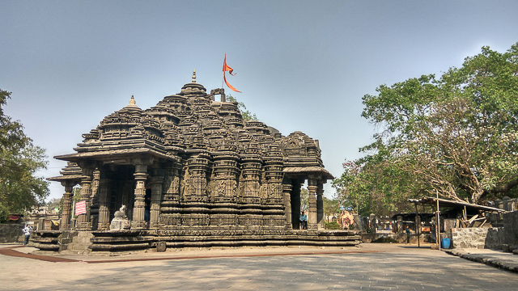
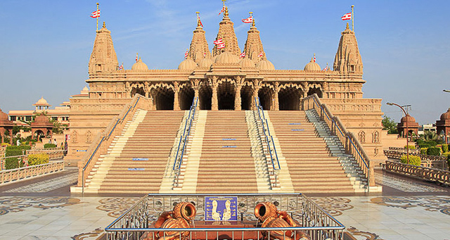

Ganpatipule Temple
Ganpatipule Temple is the main attraction of the Ganpatipule Beach, situated 25 km away from the city of Ratnagiri. It houses a 400 year old idol statue of Lord Ganesha. Believe it or not, it is said that the idol sprung up from the Earth as there lies no evidence of it being built in history. Read More....

Panchganga Temple
Nestled in the scenic and mountainous region of Old Mahabaleshwar, this temple is one of the hill station’s most popular attractions. Inside the temple, you can find an idol of Lord Vishnu, two Gaumukhis, and 5 river halls. As the name implies, the temple is built at the convergence point of five rivers and pays tribute to the rivers Krishna, Venna, Koyna, Savitri, and Gayatri. Read More....

Ambarnath Temple
Situated on the outskirts of Mumbai in the suburban city of Ambarnath, this Shiv temple is a foundation that serves as a religious and architectural memoir of a time long gone. The temple is said to date back to the 11th-century during the reign of the Shilahara dynasty. Read More....
Shirdi Sai Baba Temple
The small town of Shirdi is a popular destination for pilgrims from all over the world. Known as the abode of Shree Sai Baba, the town is one of the most visited pilgrimage sites in Maharashtra. Built in 1917-18, Shree Sai Baba Temple is the main attraction in Shirdi. Read More....
